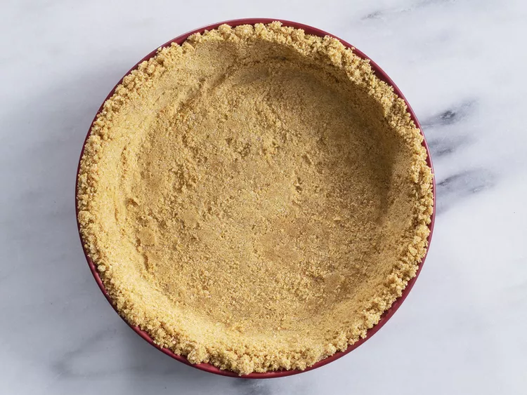

Graham Cracker Crust

Why buy a store-bought graham cracker crust when you can make your own at home? This basic graham cracker crust recipe is easy to make with just a few ingredients — and it tastes so much better than the pre-packaged stuff.
Ingredients
- Graham cracker crumbs: You can buy graham cracker crumbs at the store or use a zip-top bag to crush whole graham crackers at home.
- Sugar: You'll need ⅓ cup white sugar for this crumb crust recipe.
- Butter Melted butter adds richness and helps hold the crust together.
- Cinnamon: A pinch of cinnamon is optional, but it adds pleasant flavor and warmth.
Steps
- Mix together the first three ingredients until smooth.
- Follow directions for a baked or no-bake crust. (Determined by the type of dish being made.)